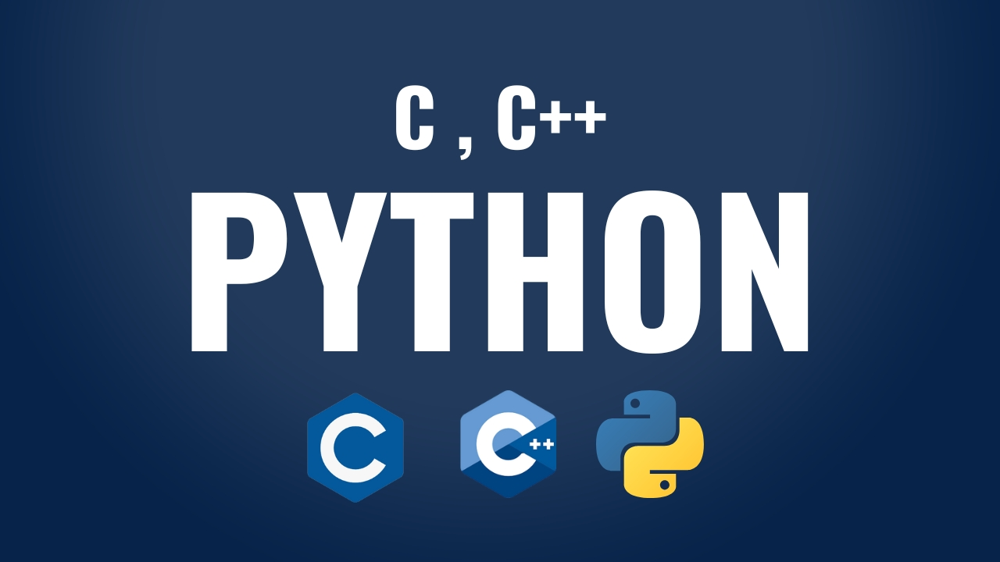
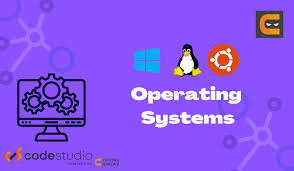
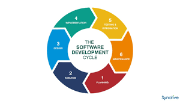

Skill Set

Web Development: Html, CSS, Javascript

Programming Languages: C, C++, Python

Version Control(Github)

Operating System Concepts

Machine Learning Alogorithms(Basic level)

SDLC Methodology Basics
Academic Projects
Multiple Disease Prediction System Using Machine Learning Algorithms
A Multiple Disease Prediction System uses machine learning algorithms to predict the chances of different diseases (like Diabetes, Heart Disease, Parkinson’s, etc.) based on user inputs such as symptoms and health parameters. The system processes the input data, applies trained ML models, and provides an early risk indication.Technologies Used: Python, django, Machine Learning.
Algorithms Used:
Logistic Regression : for simple, binary disease prediction
Decision Tree : handles non-linear data
Forest : improves accuracy using multiple trees
Key Features:
Predicts multiple diseases in one platform
Fast and user-friendly
Helps with early detection and awareness (not a medical diagnosis)
Workflow:
User Input → Data Preprocessing → Trained ML Model → Disease Risk Prediction → Display Result
A Web Application On Sign Language Translator
A Sign Language Translator is a machine learning/computer vision–based system that recognizes hand gestures and converts them into text or speech or Vice-Versa. Its purpose is to help bridge the communication gap between hearing-impaired individuals and others.Technologies Used: Python, OpenCV, text-to-speech API, NLP, Machine Learning(CNN models).
Key Features:
Converts sign gestures into readable text or speech.
Real-time gesture recognition.
Helps improve accessibility and communication.
Works on alphabets (A-Z) or words depending on training dataset.
Achievements
Certification in Ms Office(Word, Powerpoint, Excel) - Geeni Computer Education.Certification In "C" and "C++" Programming Languages - Geeni Computer Education.
Certification of "Full Stack Development" - NoviTech R&D Private Limited.
ContactMe
LinkedIn :Let's Connect On LinkedIn
GitHub :Checkout my Github profile